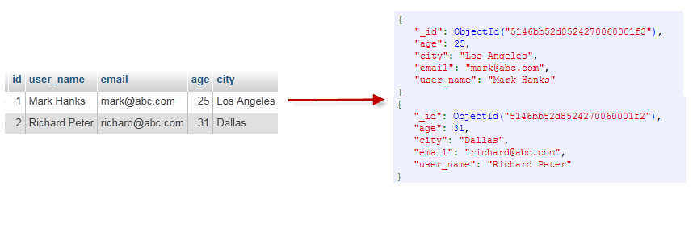

MongoDB 是由C++语言编写的，是一个基于分布式文件存储的开源数据库系统。
在高负载的情况下，添加更多的节点，可以保证服务器性能。
MongoDB 旨在为WEB应用提供可扩展的高性能数据存储解决方案。
MongoDB 将数据存储为一个文档，数据结构由键值(key=>value)对组成。MongoDB 使用 BSON 作为数据格式，类似于 JSON 对象。
字段值可以包含其他文档，数组及文档数组。
MongoDB 是一个面向文档存储的数据库，操作起来比较简单和容易。
你可以在MongoDB记录中设置任何属性的索引 (如：FirstName="Sameer",Address="8 Gandhi Road")来实现更快的排序。
你可以通过本地或者网络创建数据镜像，这使得MongoDB有更强的扩展性。
如果负载的增加（需要更多的存储空间和更强的处理能力） ，它可以分布在计算机网络中的其他节点上这就是所谓的分片。
Mongo支持丰富的查询表达式。查询指令使用JSON形式的标记，可轻易查询文档中内嵌的对象及数组。
MongoDb 使用update()命令可以实现替换完成的文档（数据）或者一些指定的数据字段 。
Mongodb中的Map/reduce主要是用来对数据进行批量处理和聚合操作。
Map和Reduce。Map函数调用emit(key,value)遍历集合中所有的记录，将key与value传给Reduce函数进行处理。
Map函数和Reduce函数是使用Javascript编写的，并可以通过db.runCommand或mapreduce命令来执行MapReduce操作。
GridFS是MongoDB中的一个内置功能，可以用于存放大量小文件。
MongoDB允许在服务端执行脚本，可以用Javascript编写某个函数，直接在服务端执行，也可以把函数的定义存储在服务端，下次直接调用即可。
MongoDB支持各种编程语言:RUBY，PYTHON，JAVA，C++，PHP，C#等多种语言。
MongoDB安装简单。
在mongodb中基本的概念是文档、集合、数据库，下面我们挨个介绍。
下表通过与SQL中概念的比较帮助您更容易理解Mongo中的一些概念：
通过下图实例，我们也可以更直观的了解Mongo中的一些概念：

一个mongodb中可以建立多个数据库。
MongoDB的默认数据库为"db"，该数据库存储在data目录中。
MongoDB的单个实例可以容纳多个独立的数据库，每一个都有自己的集合和权限，不同的数据库也放置在不同的文件中。
show dbs 命令可以显示所有数据的列表。
$ ./mongo
MongoDB shell version: 3.0.6
connecting to: test
> show dbs
local 0.078GB
test 0.078GB
> 执行 db 命令可以显示当前数据库对象或集合。
$ ./mongo
MongoDB shell version: 3.0.6
connecting to: test
> db
test
> 运行 use 命令，可以连接到一个指定的数据库。
> use local
switched to db local
> db
local
> 以上实例命令中，"local" 是你要链接的数据库。
数据库也通过名字来标识。数据库名可以是满足以下条件的任意UTF-8字符串。
有一些数据库名是保留的，可以直接访问这些有特殊作用的数据库。
对应 SQL 中的行。
文档是一组键值(key-value)对(即 BSON)。MongoDB 的文档不需要设置相同的字段，并且相同的字段不需要相同的数据类型，这与关系型数据库有很大的区别，也是 MongoDB 非常突出的特点。
一个简单的文档例子如下：
{"site":"www.runoob.com", "name":"菜鸟教程"}对应 SQL 中的表格
集合就是 MongoDB 文档组。
集合存在于数据库中，集合没有固定的结构，这意味着你在对集合可以插入不同格式和类型的数据，但通常情况下我们插入集合的数据都会有一定的关联性。
比如，我们可以将以下不同数据结构的文档插入到集合中：
{"site":"www.baidu.com"}
{"site":"www.google.com","name":"Google"}
{"site":"www.runoob.com","name":"菜鸟教程","num":5}当第一个文档插入时，集合就会被创建。
$。 如下实例：
db.col.findOne()Capped collections 就是固定大小的collection。
它有很高的性能以及队列过期的特性(过期按照插入的顺序). 有点和 "RRD" 概念类似。
Capped collections 是高性能自动的维护对象的插入顺序。它非常适合类似记录日志的功能和标准的 collection 不同，你必须要显式的创建一个capped collection，指定一个 collection 的大小，单位是字节。collection 的数据存储空间值提前分配的。
Capped collections 可以按照文档的插入顺序保存到集合中，而且这些文档在磁盘上存放位置也是按照插入顺序来保存的，所以当我们更新Capped collections 中文档的时候，更新后的文档不可以超过之前文档的大小，这样话就可以确保所有文档在磁盘上的位置一直保持不变。
由于 Capped collection 是按照文档的插入顺序而不是使用索引确定插入位置，这样的话可以提高增添数据的效率。MongoDB 的操作日志文件 oplog.rs 就是利用 Capped Collection 来实现的。
要注意的是指定的存储大小包含了数据库的头信息。
db.createCollection("mycoll", {capped:true, size:100000})String 字符串。存储数据常用的数据类型。在 MongoDB 中，UTF-8 编码的字符串才是合法的。
Integer 整型数值。用于存储数值。根据你所采用的服务器，可分为 32 位或 64 位。
Boolean 布尔值。用于存储布尔值（真/假）。
Double 双精度浮点值。用于存储浮点值。
Min/Max keys 将一个值与 BSON（二进制的 JSON）元素的最低值和最高值相对比。
Array 用于将数组或列表或多个值存储为一个键。
Timestamp 时间戳。记录文档修改或添加的具体时间。
Object 用于内嵌文档。
Null 用于创建空值。
Symbol 符号。该数据类型基本上等同于字符串类型，但不同的是，它一般用于采用特殊符号类型的语言。
Date 日期时间。用 UNIX 时间格式来存储当前日期或时间。你可以指定自己的日期时间：创建 Date 对象，传入年月日信息。
Object ID 对象 ID。用于创建文档的 ID。
Binary Data 二进制数据。用于存储二进制数据。
Code 代码类型。用于在文档中存储 JavaScript 代码。
Regular expression 正则表达式类型。用于存储正则表达式。
下面说明下几种重要的数据类型。
ObjectId 类似唯一主键，可以很快的去生成和排序，包含 12 bytes，含义是：
前 4 个字节表示创建 unix 时间戳,格林尼治时间 UTC 时间，比北京时间晚了 8 个小时
接下来的 3 个字节是机器标识码
紧接的两个字节由进程 id 组成 PID
最后三个字节是随机数
MongoDB 中存储的文档必须有一个_id 键。这个键的值可以是任何类型的，默认是个 ObjectId 对象
由于 ObjectId 中保存了创建的时间戳，所以你不需要为你的文档保存时间戳字段，你可以通过 getTimestamp 函数来获取文档的创建时间:
> var newObject = ObjectId()
> newObject.getTimestamp()
ISODate("2017-11-25T07:21:10Z")ObjectId 转为字符串
> newObject.str
5a1919e63df83ce79df8b38fBSON 字符串都是 UTF-8 编码。
BSON 有一个特殊的时间戳类型用于 MongoDB 内部使用，与普通的 日期 类型不相关。 时间戳值是一个 64 位的值。其中：
在单个 mongod 实例中，时间戳值通常是唯一的。
在复制集中， oplog 有一个 ts 字段。这个字段中的值使用BSON时间戳表示了操作时间。
BSON 时间戳类型主要用于 MongoDB 内部使用。在大多数情况下的应用开发中，你可以使用 BSON 日期类型。
表示当前距离 Unix新纪元（1970年1月1日）的毫秒数。日期类型是有符号的, 负数表示 1970 年之前的日期。
> var mydate1 = new Date() //格林尼治时间
> mydate1
ISODate("2018-03-04T14:58:51.233Z")
> typeof mydate1
object> var mydate2 = ISODate() //格林尼治时间
> mydate2
ISODate("2018-03-04T15:00:45.479Z")
> typeof mydate2
object这样创建的时间是日期类型，可以使用 JS 中的 Date 类型的方法。
返回一个时间类型的字符串：
> var mydate1str = mydate1.toString()
> mydate1str
Sun Mar 04 2018 14:58:51 GMT+0000 (UTC)
> typeof mydate1str
string或者
> Date()
Sun Mar 04 2018 15:02:59 GMT+0000 (UTC)